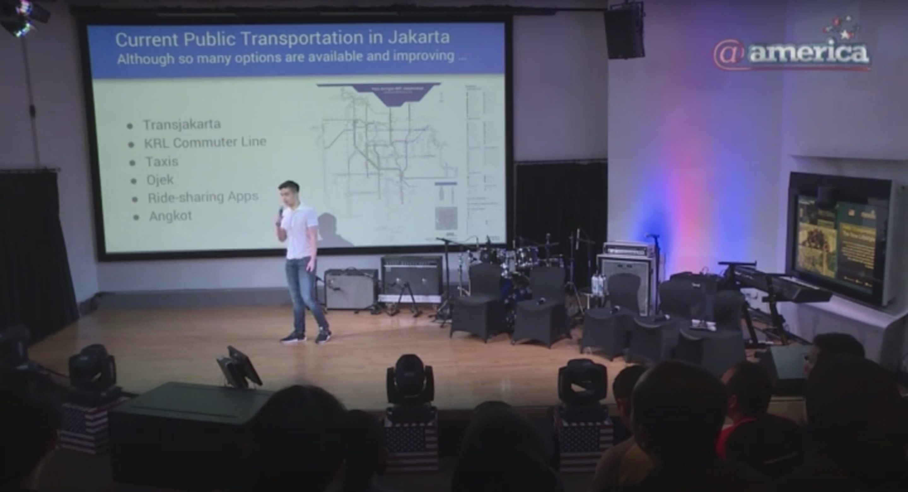

Welcome I'm Paul Liong, currently a sophomore at Northwestern University studying Computer Science and an aspiring software engineer.
Past Projects
Public Transportation Event at @america

On September 2018, I spoke at @america, which is the U.S. Embassy's cultural center in Jakarta, Indonesia, about the implications of the new (at the time) MRT system. Integrating this efficient and cheap public transportation system with other forms of transportation, especially the two-wheeled ride-hailing services so prevalent in Southeast Asia, has great potential to reduce overall traffic and pollution in the city.
Over the course of 3 months, I and three teammates designed a self-powered, environmentally friendly, and unobtrusive water aeration system for the Bubbly Creek section of the Chicago River for the Friends of the Chicago River organization. The project was initiated with scientific and market research, expert interviews, and (virtual) site observation. This was followed by an iterative design process that was finalized with a CAD sketch, a professional presentation, and a final report.